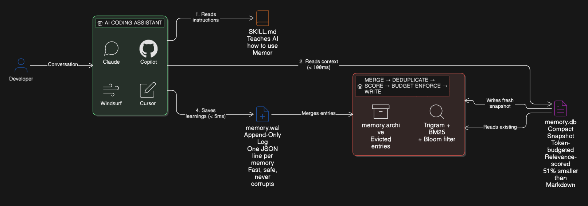

Every AI coding agent starts every conversation cold — no memory of your decisions, conventions, or past fixes. Memor changes that.
npm i -g @memor-dev/memor
Every AI coding tool suffers from the same condition. Every conversation starts at zero.
You re-explain your stack, conventions, and decisions at the start of every single conversation.
Redundant context burns through your token budget — paying for the same information over and over.
Monday's AI says use pattern A. Tuesday's AI says pattern B. No consistency across sessions.
Yesterday's bug fix, last week's architecture decision — the AI has no idea any of it happened.
An LSM-tree-inspired pipeline: instant writes, ranked reads, sub-millisecond retrieval.

AI tools append memories as JSONL to memory.wal — append-only, crash-safe, no coordination.
Merges WAL into memory.db — SHA-256 dedup, relevance scoring, token budget enforcement.
memor context retrieves ranked memories within budget — trigram index + BM25, sub-millisecond.
Token savings are real, but developer time savings are 100x larger.
Inspired by human cognitive memory — each type has its own lifecycle and decay behavior.
Facts, decisions, architecture choices. The backbone of project knowledge.
@s #auth: OAuth2+PKCE via Auth0
Events and bugs fixed. Fades over time — archived after 90 days.
@e #fix: N+1 query in dashboard loader
Commands, workflows, how-tos. The recipes agents need to execute correctly.
@p #deploy: pnpm turbo deploy --filter=api
Style conventions and developer preferences. Permanent — never archived.
@f #ts: No any, use unknown + type guards
Everything runs locally. No daemon, no background processes, no git commits.
memor init
Set up .memor/ with hooks and skill files
memor add
Append a new memory to the WAL
memor context
Get ranked context within token budget
memor search <query>
Full-text search with trigram + BM25
memor compact
Merge WAL into snapshot, deduplicate
memor stats
Entry counts, token usage, index health
memor reinforce <id>
Boost relevance of a useful memory
memor knowledge add
Index a document into the knowledge base
No vendor lock-in. Memor works with any AI coding tool.
Five files per project. Full indexing engine. Zero cloud. Zero config.
npm i -g @memor-dev/memor